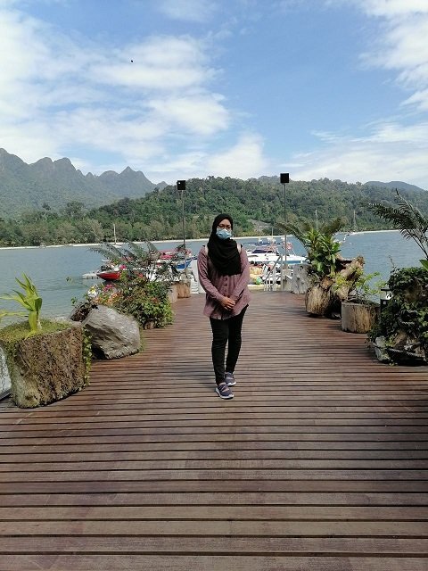

Don’t be into trends. Don’t make fashion own you, but you decide what you are, what you want to express by the way you dress and the way to live
|  | ||||
| Name
SYAZA NADZIRAH BINTI SHUIB |
Age
20 YEARS OLD |
Date of Birth
28th NOVEMBER 2000 |
Residence
Padang Matsirat, Langkawi |
Status
SINGLE |
| Place of Birth
LANGKAWI HOSPITAL |
Number of Siblings
2ND CHILD FROM 3 |
Ambition
IT SPECIALIST |
Gender
FEMALE |
Religion
MUSLIM |
| Race
MALAY |
Nationality
MALAYSIAN |
State of Residence
KEDAH |
Occupation
STUDENT |
Motto
IT AIN'T OVER TILL IT'S OVER |
Characteristics
|
Hates
|
Favourite Genre
|
Favourite Songs
|
Hobby
|
Favourite Foods
|
Phobias
|
Favourite Colors
|
Favourite Animal
|
Favourite Kpop Groups
|
MUSIC BACKGROUD: BUTTERFLY;THE BOYZ (INSTRUMENTAL)
COPYRIGHT© SYAZA PERSONAL WEBSITE; FLATICON.COM; CANVA.COM;